Overview
Purpose
Antigua Guatemala is the historical former capital of the country. I want it to provide a taste of the experience and connect people with their desired activities. From volcano hikes to custom made boots we will also provide recommendations of places to go and things to do as well. It will provide easy access to rentals, excursions, hotels, and more based on where you want to go.
Audience
Have you ever been to paradise? I would like to bring the adventurous traveler there while they are visiting Antigua Guatemala. Everyone has their favorite thing here and with your help we will find yours. So if you are an adventureous type looking for a cultural experience, you are in the right place.
Dynamic elements
This webpage will be using dynamic elements for the content on its child pages and the Contact Us form. The child pages will be importing arrays from ES Modules to autopopulate the template functions onScroll. They will be divided into a and b containers so the images and text can alternate places using forEach. The Contact Us form will use conditional branching and event listeners to control the hide class. It will also use validation for the inputs.
Branding
Website Logo
Style Guide
Color Palette
Palette URL: https://coolors.co/abc2c7-ab5f3c-45100c-d0a021| Primary | Secondary | Accent 1 | Accent 2 |
|---|---|---|---|
| #ABC2C7 | #AB5F3C | #45100C | #D0A021 |
Typography
Heading Font: vietnamese
Paragraph Font: latin-ext
Normal paragraph example
Our travel agency website is your gateway to paradise, offering an array of experiences tailored to your desires. Embark on thrilling volcano hikes, where you'll witness breathtaking views of the surrounding landscape and feel the ancient earth beneath your feet.
Colored paragraph example
Our travel agency website invites you to experience the wonders of this former colonial capital, offering a variety of experiences to fulfill every traveler's dream. Feel the thrill of exhilarating hikes, views that stretch to the horizon.
Navigation
Content
Home page
Antigua Guatemala
Visit the Old City the heart of Guatemala
find your adventure
contact us


[Page 2]
Antigua Guatemala is a captivating city that transports visitors back to an era of cobblestone streets and well-preserved colonial architecture. This ancient city is surrounded by volcanoes. Fuego, Agua and Acatenango provide a backdrop to this picture perfect town. Antique is full of rich cultural heritage. Wander through the enchanting Parque Central, where the iconic Arco de Santa Catalina frames views of the nearby Volcan de Agua. Explore the meticulously restored colonial buildings, including the Cathedral of Santiago and the Palace of the Captain Generals. Delve into the local culture by visiting the market where indigenous crafts are sold. With its timeless charm and diverse attractions, Antigua Guatemala promises an immersive journey through history and culture.
Cerro de La Cruz
Hike a couple of hindered steps to get a panoramic view of Antigua Guatemala and across to Agua volcano
Drive up for the same view
Very large cross is visible from the valley
Tanque Union (public pilas)
Located a couple of blocks from Parque Central a smaller park boasts the historic location where locals would gather to wash their laundry.
Lovely arches create a beautiful backdrop at sunrise while surrounded by the colonia architecture of the city
Iglesia de La Merced
A bright yellow Cathedral that almost glows in the early morning light. Built in the mid 1700s and contains one of the largest fountains in Central America called Fountain de los Pescados
Parque Central
La Fuente de las Sirenas is an ornate fountain with 3 sculptures depicting the beautiful, mythical siren sisters who would lure young sailors into the water so they could drown and eat them.
There are also people there who will polish and shine your shoes for a dollar.


[Page 3]
Within an hour drive from Antigua Guatemala are several amazing day trips to grab your attention. If you love shopping, Chichicastenango offers local hand crafted items. If outdoor adventure is what you're looking for, the active volcano Pacaya hike will provide a thrilling ascent with beautiful views. While there you can cook pizza on hot lava rocks headed by the volcano. Travel back hundreds of years as you visit the Mayan ruins of Iximche where you can learn history from a local tour guide who will take you back to a time of high stakes games where the team who loses also loses their heads. Sit lake side as you take in the views from the beaches of Lago Atitlan, the deepest lake in Central America. Come find your paradise in and around Antigua Guatemala!
Pacaya Volcano
One of 3 active volcanoes in Guatemala, Pacaya reaches 8,400 feet above sea level and sits about 30 miles outside of the city Antigua. Get your reservation to eat pizza cooked with lava rocks heated by the volcano. Park entrance fees are $6.50 plus $26 for a guide, guides are not required by the park but are a very good idea as tourists can be victims of robberies if not accompanied. This is a perfect day trip for those who love the outdoors. This is a moderately strenuous hike but not long. For those who need a little extra help there are horses you can ride for about $20. Make sure to wear good shoes as there are lava rocks on the path and they will get in sandals and they are sharp!
Pastores (town known for it's handmade leather goods)
Pastores is a town about a 20 minute bus ride outside of Antigua. Here there are many different leather artisans who can make anything from belts to boots out of leather. They will trace and/or measure you to give you the best experience of a custom piece of leather clothing for less than something made with fake leather “off the rack" would cost in the US.
San Juan del Obispo
Small town a short bus ride from Antigua. Known for having one of the first Catholic churches in Guatemala. It has a sculpture of the níspero (Locquat in English) fruit and you can buy marmalades and syrups made from the fruit here. Watch chocolate go from a bean to a paste with sugar being incorporated then formed into discs that when dry can be added to warm milk or water for hot chocolate.
Chichicastenango Market
Mercado de Chichicastenango is well known as colorful and open air as well as possibly the craft largest market in Central America. Vendors from all over the region come to sell their products. From typical clothing to pottery to local food, this market is sure to have something for everyone. Open every day but Thursday and Sunday are the largest with the most vendors. The streets are wall to wall with people. It is expected that you haggle for a final price so don’t accept the first offer. Take a walk outside the market of Chichi, as the locals call it, and you'll find the Roman Catholic Iglesia de Santo Tomas. This church is not only where locals participate in Maya rituals on the steps but also home to the Chichicastenango Regional Museum.
Panajachel (largest town on Lago Atitlan)
Panajachel rests on the shore of Lake Atitlan and is full of culture, restaurants and a street market. This is a major launching location for the lanchas that cross the lake to take locals and tourists alike to the other villages that surround the lago Atitlán.
Iximche (mayan ruins)
A Pre-Columbian Mesoamerican archaeological site, you may see religious sacrifices being made, if so be respectful, steer clear and stay quiet.
Cayala
A city within a city, Cayala is a gated multi purpose community with white walled buildings, a high end hotel, restaurants and shops as well as homes
Hobbitenango
A fun hobbiton on the side of a mountain. If you are a Lord of the Rings fan you can visit “Middle Earth” without having to travel to New Zealand. About 20 minutes outside Antigua, you can get a reservation for both entrance and a ride to the park at the office on 3a Avenida Norte. There is plenty of adventure to be had and houses to see so give yourself a few hours to enjoy it all. Stick around until sunset you will be rewarded with gorgeous vistas with volcanoes on the horizon and will often have a view from above the clouds.
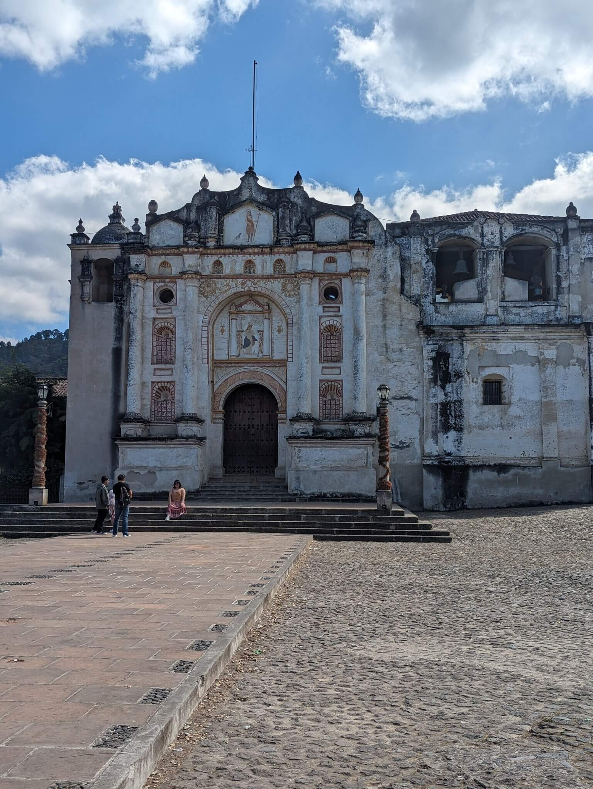

 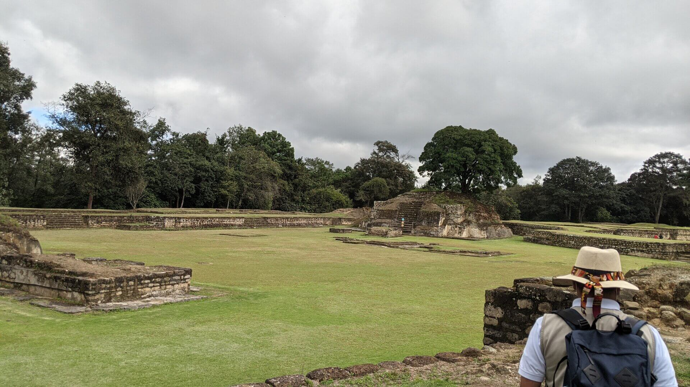
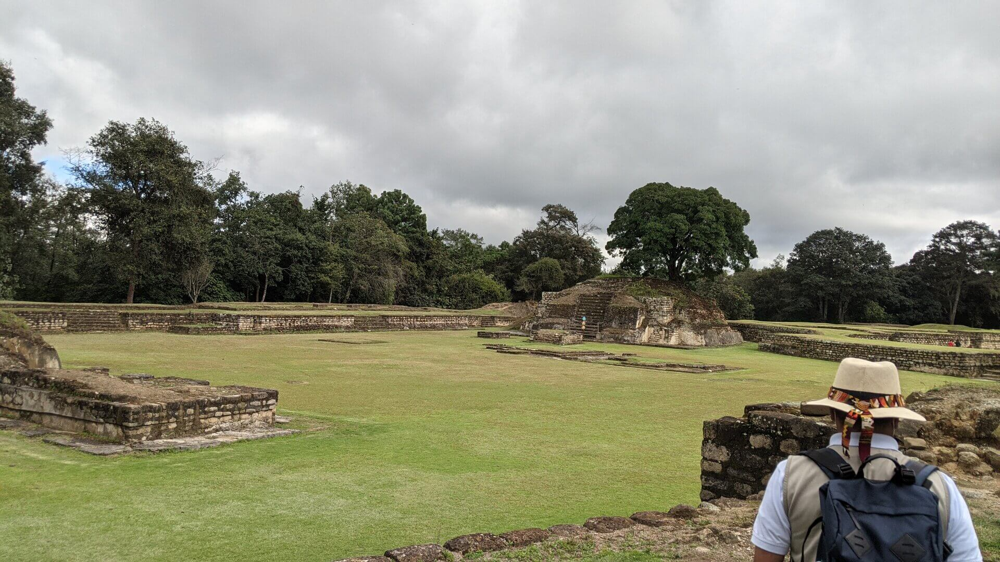


[Page 4]
The culinary scene of Guatemala has something for food enthusiasts and those who just like to eat. Fridas, a Mexican-themed restaurant in Antigua, pays homage to Frida Kahlo with self-portraits adorning its walls. The ambiance is as delightful as the cuisine.. For an iconic Guatemalan experience, Pollo Campero stands out as the go-to destination, celebrated for its local fried chicken.. Dona Maria Gordillo Dulces Tipicos, a traditional candy shop offering handcrafted Guatemalan sweets. These are just a few amazing places in Antigua you find amazing eats.
Fridas, mexican food in Guatemala
Named after the famous Mexican painter Frida Kahlo. Self portraits of Freda adorn the walls of this unique restaurant set on the main street just a block from Iglesia de La Merced. From tacos to flan the food matches the amazing ambiance.
Pollo Campero
You can’t go to Guatemala without trying their famous fried chicken. If fried chicken is not in your diet they have limon grilled chicken. With sides common of a fried chicken restaurant they offer mac and cheese, campero rice, beans, coleslaw and french fries. All meals come with your choice of dinner roll or tortillas. This is the McDonald's of Guatemala!
Doña Maria Gordillo Dulces Tipicos
Started by a local family in 1872 this traditional candy shop offers typical Guatemala hand-made sweets. Ever wondered what candied figs taste like, or mazapan? You can’t come to Antigua without stopping by this amazing shop.
Las Palmas
If you like live music you will love Las Palmas. This restaurant bar offers a mix of food from tacos to family BBQ with pasta and curry, you are sure to find something you will like. This is also the place when you're in the mood for dessert. They have a variety of cakes and ice creams.
Del Arco Restaurant
This restaurant is set in the Hotel Convento Santa Catalina which was build in the 1600’s as a convent. This restaurant offers traditional Guatemalan food as well as steak or chicken plates.

 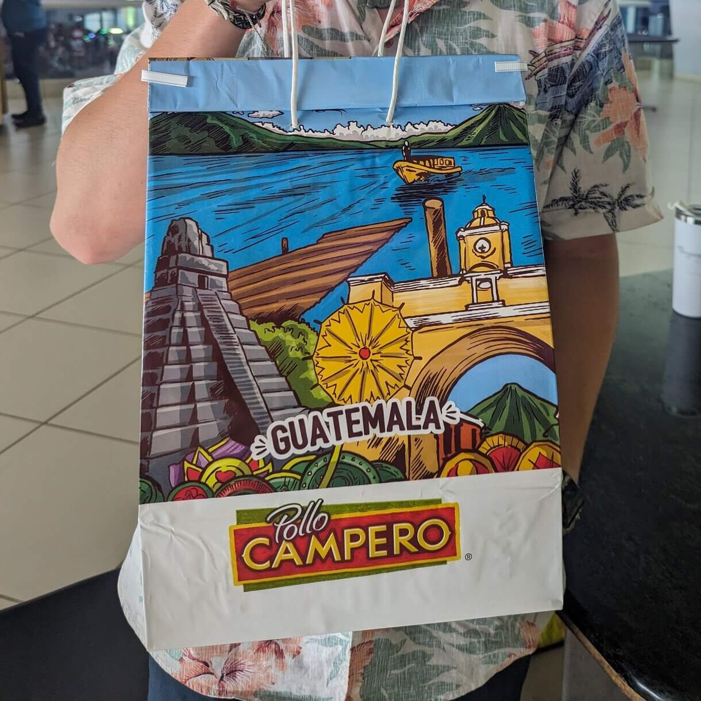
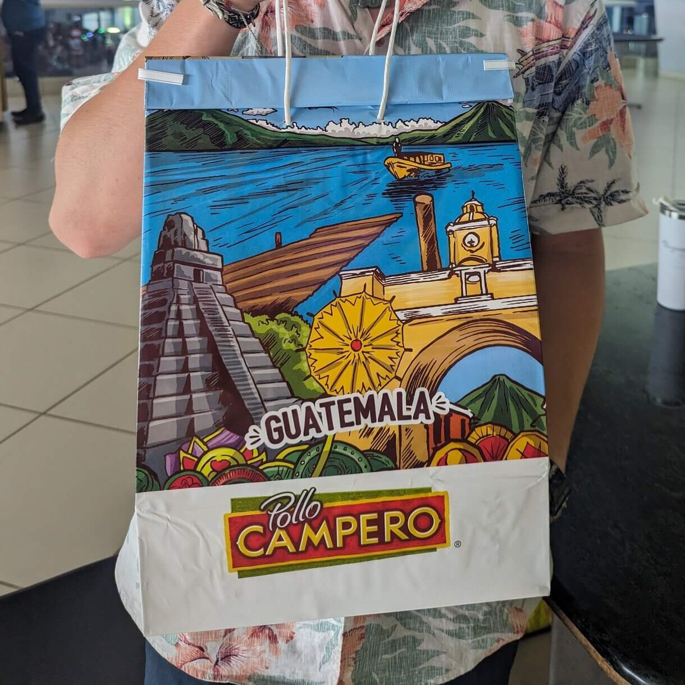
 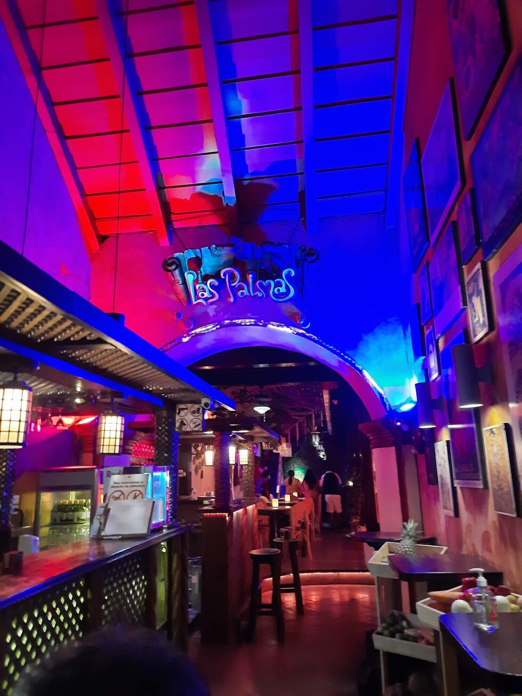
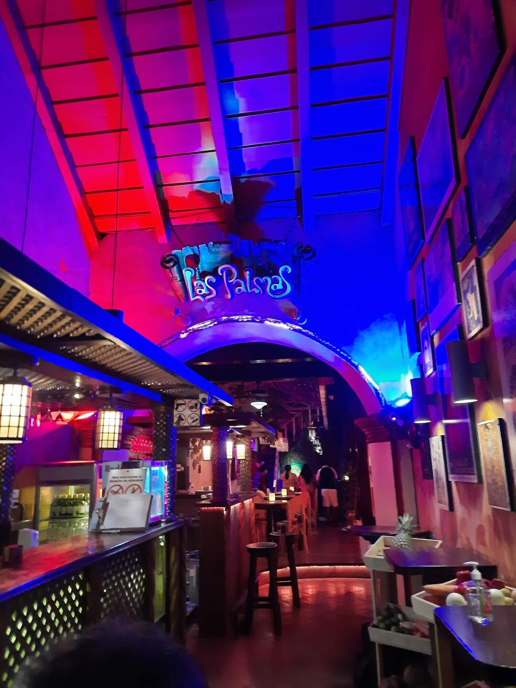

[Page 5]
[contact us form]
Wireframes
Create two wireframes for your site. One for each page and list them here
Home
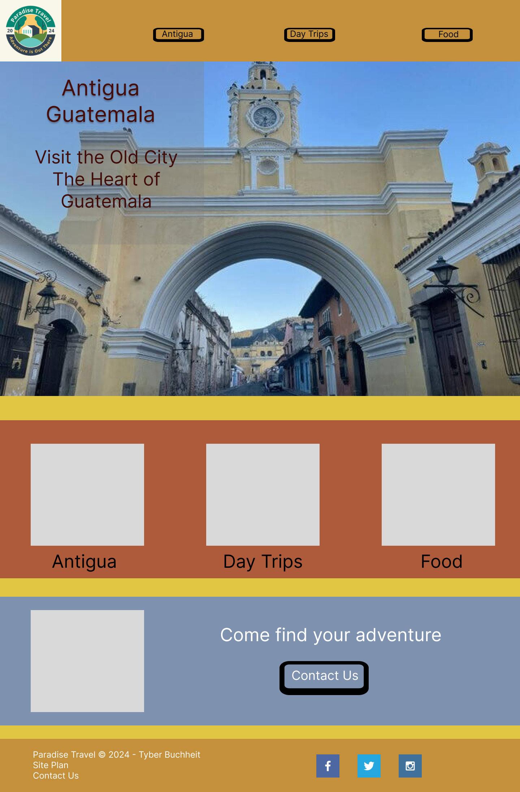[Page 2]
The content will be stored in arrays from ES Modules to autopopulate the template functions onScroll.
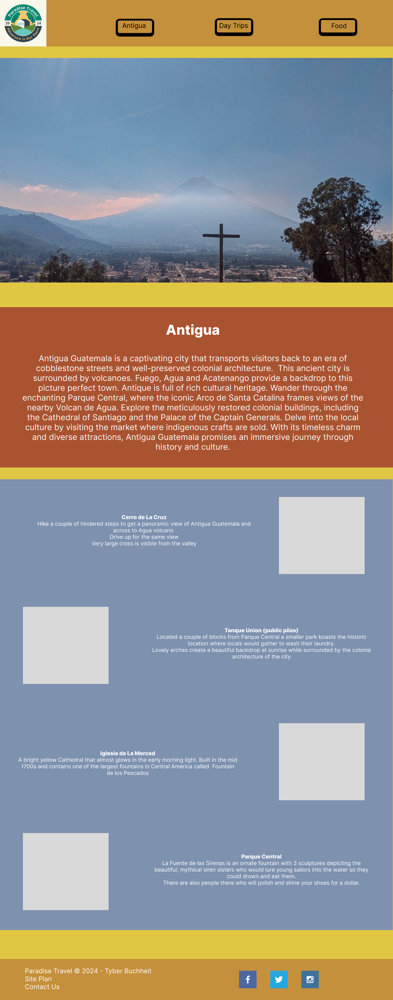[Page 3]
The content will be stored in arrays from ES Modules to autopopulate the template functions onScroll.
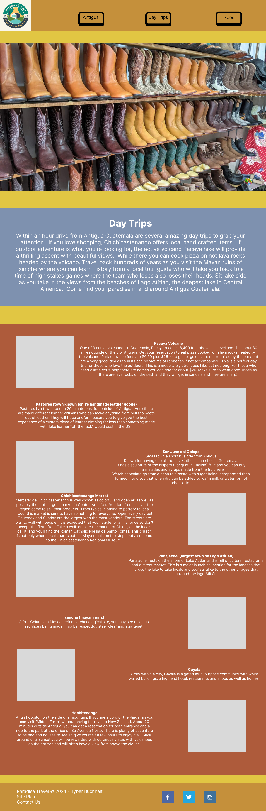[Page 4]
The content will be stored in arrays from ES Modules to autopopulate the template functions onScroll.
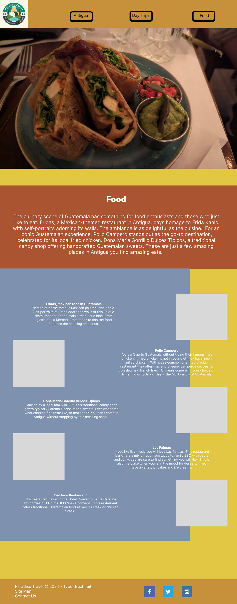[Page 5]
The Contact Method field drops down for one of three options to be selected which will unhide the desired elements. The options are email, phone number, or both.
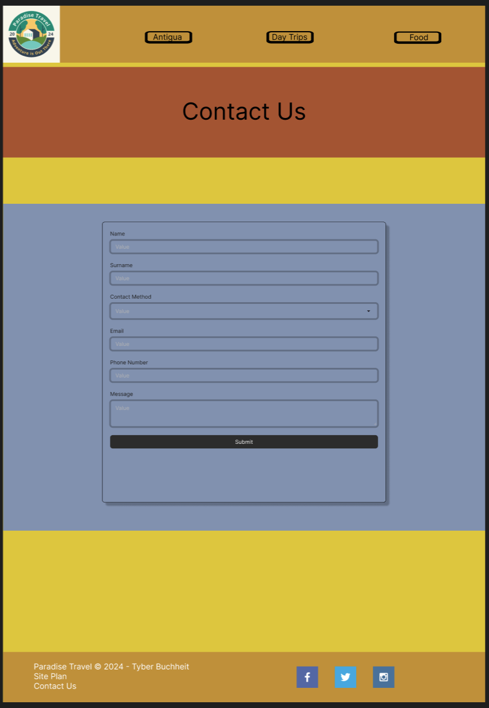